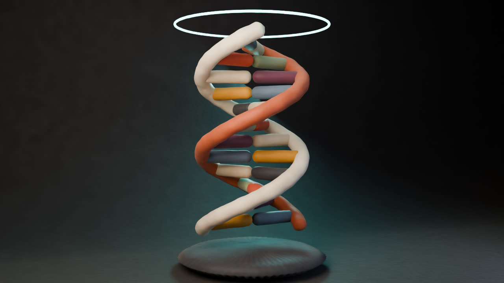

Cuatro pares, una identidad
Como el ADN, tu color se escribe en pares. Cada peldaño une los dos polos de una dimensión.
Colorimetría personal
Tu color personal no es una estación al azar: se lee en cuatro dimensiones. Las hemos modelado en plastilina, como una doble hélice, para que veas cómo encajan.

Desplázate para construir la hélice · arrastra para girar · toca una pieza
Como el ADN, tu color se escribe en pares. Cada peldaño une los dos polos de una dimensión.
Es la temperatura de tu piel. El cálido tiene matices dorados o melocotón; el frío, rosados o azulados; el neutro, un equilibrio de ambos. Es la primera pregunta de cualquier análisis.
Mide la luminosidad de piel, cabello y ojos. Determina si te favorecen más los tonos claros o los profundos.
Es la saturación. Hay rostros que piden colores limpios y vivos, y otros que se ven mejor con colores empolvados.
Es la diferencia entre tus rasgos. Indica si te favorecen combinaciones marcadas o el tono sobre tono.
La combinación de las cuatro dimensiones es tu código de color. En una sesión lo leemos con telas de prueba y luz natural.
Reserva tu análisis de colorCálido o frío. Define la familia de colores base.
Claro u oscuro. Ajusta la profundidad de cada tono.
Brillante o suave. Decide la pureza del color.
Alto o bajo. Marca cómo combinar las prendas.
Sobre un pedestal de plastilina gris pizarra, dos cadenas (marfil y arcilla) se elevan en espiral. Doce peldaños aparecen uno a uno con un pequeño rebote: ocre y azul acero (subtono), marfil y ciruela (valor), teja y salvia (intensidad), pizarra y arena (contraste). Un anillo de luz cian recorre la hélice de abajo arriba mientras la cámara se acerca.
Es un estudio de tu piel, cabello y ojos que identifica los colores que te favorecen. Se basa en cuatro dimensiones: subtono, valor, intensidad y contraste. El resultado es una paleta personal para ropa, maquillaje y accesorios.
Un subtono cálido tiene matices dorados o melocotón; uno frío, matices rosados o azulados; y uno neutro combina ambos. La forma fiable de saberlo es comparar telas de prueba junto al rostro con luz natural, como se hace en un análisis profesional.
El valor mide lo claro u oscuro de un color; la intensidad, lo limpio o apagado que es. Un azul marino es oscuro (valor) y puede ser brillante o suave (intensidad).
El contraste indica cuánta diferencia hay entre tu piel, cabello y ojos. Con contraste alto te favorecen combinaciones marcadas; con contraste bajo, combinaciones tono sobre tono.
Una sesión de análisis de color con Cristina Barriga: diagnóstico de las cuatro dimensiones y paleta personal.